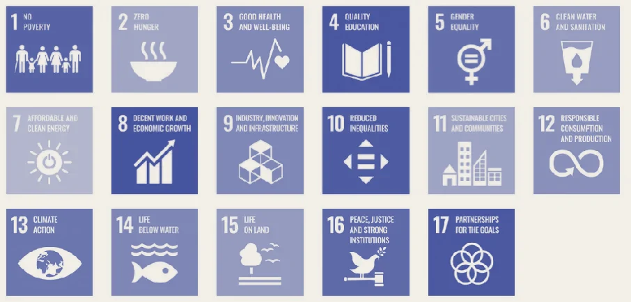

How did we get here?
Two powerful and inter-linked forces are forcing organisations to re-think how they create sustainable value: first, the growing urgency of climate- and nature-driven risks; and second, the widening gap between corporate sustainability goals and meaningful business and environmental outcomes.
On one hand, recent analysis points to accelerating climate impacts and resource-intensity that threaten resilience and competitiveness. The Intergovernmental Panel on Climate Change (IPCC) notes that emissions continue to rise and current plans fall short of limiting global warming to 1.5 °C. In 2025, organisations must also grapple with emerging material risks such as biodiversity loss, water stress, and supply-chain fragility.
At the same time, the institutional and regulatory environment around ESG is undergoing a reset. The rise of mandatory disclosure frameworks (such as the Corporate Sustainability Reporting Directive and the Corporate Sustainability Due Diligence Directive in the EU) is raising the bar for transparency and accountability. Meanwhile, regulators and stakeholders are intensifying scrutiny of green-claims, and corporates are being called to demonstrate measurable value.
In short: sustainability is no longer a peripheral ambition or reporting tick-box. It is central to resilience, regulatory compliance and competitive strategy in 2025. And as governance becomes the bridge between intent and impact, how do we build the systems and leadership that embed sustainability commitments into day to day business?
Firms need to rethink their current sustainability strategies
What do you mean?
Sustainability and governance are broad topics and beyond the scope of this article. However the examples below will provide a flavour of what we mean.
1.Sustainability
The United Nations 17 Sustainable Development Goals (SDG) are the most widely known and broad ranging. The SDGs include 3. Good Health and Well-being, 4. Quality Education, 10. Reduced Inequalities, 13. Climate Action, and 16. Peace, Justice and Strong Institutions.
The United Nations 17 Sustainable Development Goals (SDG)

The United Nations 17 Sustainable Development Goals (SDG)
As Amartya Sen (Professor of Economist and Philosophy at Harvard University and Nobel Prize winner) states, we should think about our responsibilities for future generations and not adversely affect the future — leave no footprint behind
“be committed to make sure that our successors are not left in ruins generated by us”
To encompass the preservation, and when possible expansion, of the substantive freedoms and capabilities of people today “without compromising the capability of future generations” to have similar — or more — freedoms
Robert Solow, (Emeritus Institute Professor of Economics at the Massachusetts Institute of Technology and Nobel Prize winner) in An Almost Practical Step toward Sustainability, sees sustainability as the requirement that
The next generation must be left with “whatever it takes to achieve a standard of living at least as good as our own and to look after their next generation similarly.”
One final reference, Roman Krznaric’s recent book The Good Ancestor, How to think long term in a short-term world. From the pyramids to the NHS, humankind has always had the innate ability to plan for posterity and take action that will resonate for decades, centuries, even millennia to come. If we want to be good ancestors and be remembered well by the generations who follow us, now is the time to recover and enrich this imaginative skill.
The UN SDGs facilitate the alignment of corporate strategy with the needs of today’s society, offering areas of innovation and opportunity. A firm can define an aspirational purpose in a way that is relevant and inspiring to stakeholders (for example, attracting talent). We believe it makes sense for corporates to take a broad and long term perspective on sustainability.
2. Governance
Put simply, governance means active challenge and oversight. We should avoid considering corporate governance as the sole activity of a board of directors that meets monthly or quarterly. All stakeholders must be involved in governance, as they have an important role to play in discussing, agreeing and reviewing corporate activities and plans.
The UK Corporate Governance Code (formerly known as the Combined Code) sets out standards of good practice for listed companies on board composition and development, remuneration, shareholder relations, accountability and audit. The code is published by the Financial Reporting Council (FRC).
Governance can be simplified to mean the rules by which we operate. We believe governance consists of a structure and a system (set of processes) to define and oversee the rules.
Structure — elements such as a formal board, an advisory board and organisational structure, defining individual accountabilities, roles and responsibilities; and
System — principles and processes such as setting board composition, compensation, business goals and strategy, reporting and communication, audit, risk and controls. Processes will also include monitoring and changing the governance structure and system itself. Regular independent reviews would be useful.
Governance must be adaptive and not rigid. koralli believes governance must mobilise and align all stakeholders, which could include:
The Board
Regulators
Employees
Customers
Suppliers
Trade Unions / Professional Bodies
Investors
Creditors
Local community
The media
Government
koralli views the UK Corporate Governance Code as a good starting point. Individual agency and ownership are vital. Governance is not the sole remit of committees and forums. Individuals must understand and feel that its up to them to get involved and take action. Individuals can influence and control their destiny. It’s up to us to make a positive impact.
Example: IKEA's Governance
IKEA provides an example of how governance translates sustainability principles into practice.
Named leadership roles (CEO chairs the council, Chief Sustainability Officer leads the management team)
Specific methodology (OKRs with quarterly tracking)
Franchise-wide coordination (managing directors from all franchisees participate)
Working groups that share best practices through the value chain
Integration across business units (Retail, Range, Supply all have sustainability managers)
IKEA uses the OKR methodology to track progress with measurable outcomes and extends governance to its supply chain through IWAY (the IKEA way of responsibly procuring products, services, materials and components). However, even with robust governance, IKEA faces ongoing challenges including supply chain labour rights violations, illustrating that governance doesn't eliminate all ESG risks but does create structures for identifying and addressing them systematically.
Strong Governance Can Help Address Conflicting Stakeholder Interests
One of the most challenging aspects of sustainability is navigating inherent tensions between stakeholder interests: investors seeking short-term returns versus employees wanting fair wages; customers demanding affordable products versus environmental requirements for sustainable materials; current shareholder needs versus future generations' interests. Without effective governance, these tensions result in either decision paralysis or choices driven by the loudest stakeholder group, often leading to superficial "box-ticking" that claims to serve all interests without making real trade-offs.
Strong governance provides frameworks for addressing these conflicts transparently. This includes forums where different stakeholder groups come together regularly to discuss issues, share perspectives, and participate in decision-making, transparent decision-making criteria that explicitly weigh competing interests, and long-term orientation through executive compensation tied to sustainability metrics and extended planning horizons. For example, when deciding whether to implement living wages across the supply chain, robust governance would involve employee representation, multi-stakeholder working groups, long-term risk analysis (reputation, talent retention, regulatory changes), explicit discussion of trade-offs, and transparent communication of decisions with rationale explained to all stakeholder groups.
Governance doesn't eliminate stakeholder conflicts—they're inherent to complex organisations. However, it provides legitimacy (decisions are accepted when stakeholders feel heard), better decisions (multiple perspectives reduce blind spots), reduced risk (systematic consideration prevents crises), and authentic sustainability (forcing difficult conversations about real choices). Without robust governance, sustainability commitments fragment under competing demands. With it, organisations can make principled, transparent decisions that create genuine long-term value even when choices are difficult.
Is governance important for sustainability?
Until recently Anne Simpson was considered an evangelical advocate for the cause of environmental, social and governance investing (ESG). This spring, however, the former head of sustainability at the Calpers pension fund, who now runs responsible investing at Franklin Templeton, made a surprising declaration. “I think it’s time for RIP ESG,” she told a conference in New York. Specifically, she thinks that the war in Ukraine has forced ESG advocates to reconsider some of their approaches, because energy security and poverty reduction have suddenly become as important as the green transition. Box ticking around carbon emissions alone, in other words, does not work.
We firmly believe sustainability presents opportunities for value creation (as well as risks to be managed). Sustainability is critical for long term corporate success.
Governance is key to achieving sustainable change within organisations — and it is through governance that sustainability can be embedded within an organisation and transcend the problematic ‘box ticking’ paradigm.
Real change has to start at the top and involve all stakeholders, it needs to be embedded in the day-to-day (and not a Sustainability function on the side). Governance includes key activities, such as:
Active discussion and debate about sustainability and values
Development and tracking of goals and targets
Allocation of resources, balancing the needs of different stakeholders
Through governance rules are defined and overseen. No limits or no rules leads to anarchy and chaos. Without effective governance, unfair and unjust standards and procedures will be established and/or the right rules will not be properly followed and managed. Not following the rules, is irresponsible, reckless and could be illegal. We set and work to corporate governance standards, not just because it’s a legal responsibility and “worthy”, it’s in an organisation’s self-interest, a business imperative to create long term sustainable value.
What impact do we want to have?
The consequences of not tackling sustainability challenges effectively will be dramatic for corporates, whether in the short term or long term, impacts range from:
Employee or customer dis-satisfaction
Regulatory fines
Lost business opportunities
Lack of investment
Competitive failure
Whereas, on the other hand, sustainable value creation provides long term competitive advantage. Founders, leadership teams, employees and, in fact, all stakeholders want to have a positive impact on our future. We do have a responsibility for future generations and through good governance we can make this happen.
Continual oversight and challenge, i.e. governance, is critical to corporate success and making a positive impact.
Governance for Sustainability in an AI-Enabled Organisation
As organisations adopt AI, sustainability governance must evolve to reflect new sources of decision-making and risk. Algorithms and data-driven systems now shape outcomes that were once entirely human, influencing everything from resource use to workforce management. Governance therefore needs to ensure that these technologies operate transparently, ethically, and in line with sustainability objectives.
Boards and leaders must understand not only sustainability metrics, but how AI systems and human and AI collaboration affect them. In this context, governance becomes a living system — continuously learning, adaptive, and capable of integrating human judgment with machine intelligence to deliver responsible, long-term value.
FURTHER READING
S&P Global's Top 10 Sustainability Trends to Watch in 2025
https://www.spglobal.com/sustainable1/en/insights/2025-esg-trends
Novisto: The top 5 ESG trends to watch in 2025
https://novisto.com/de/resources/blogs/the-top-5-esg-trends-to-watch-in-2025?utm_source=chatgpt.com
AR6 Synthesis Report: Climate Change 2022
https://www.ipcc.ch/report/sixth-assessment-report-cycle/
The Latest IPCC Report: What is it and why does it matter? The Nature Conservancy, April 2022
https://www.nature.org/en-us/what-we-do/our-insights/perspectives/ipcc-report-climate-change/
Royal Society responds to the findings of Working Group III of the IPCC’s Sixth Assessment Report, April 2022
https://royalsociety.org/news/2022/04/response-ipcc-sixth-assessment-report/
Boom in ESG ratings leaves trail of confusion., FT March 2022
https://www.ft.com/content/c34fe314-838b-4b00-ae25-9a4f0d93f822
ESG exposed in a world of changing priorities, FT June 2022
https://www.ft.com/content/6356cc05-93a5-4f56-9d18-85218bc8bb0c
United Nations. Sustainable Development Goals
SUSTAINABLE DEVELOPMENT AND OUR RESPONSIBILITIES, Amartya Sen
https://www.unipol.it/sites/corporate/files/document_attachments/sen_2010_eng_ugf_01-01-2010_en.pdf
Roman Krznaric’s recent book The Good Ancestor
https://www.romankrznaric.com/good-ancestor
The UK Corporate Governance Code (formerly known as the Combined Code)
https://www.icaew.com/technical/corporate-governance/codes-and-reports/uk-corporate-governance-code